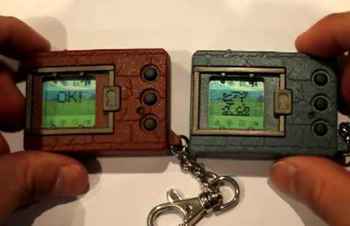
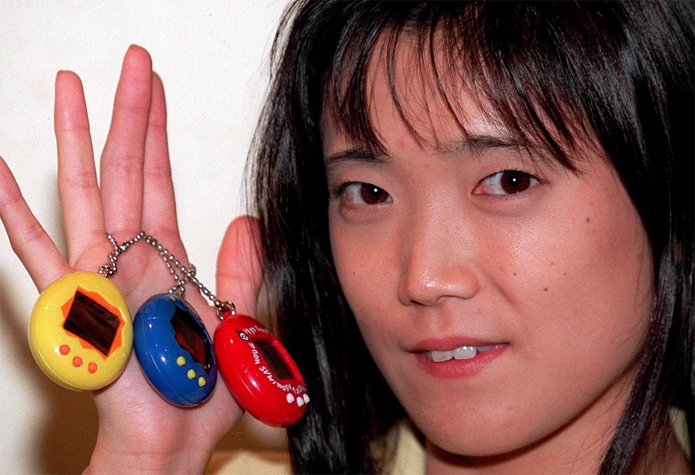
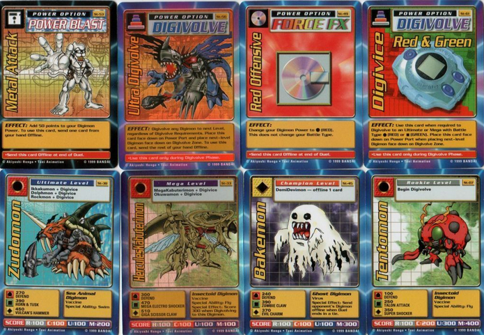

Influenciado por Tamagotchi
A principal influência de Digimon, ao contrário do que muitos pensam, não é Pokémon, mas sim Tamagotchi, aquelas criaturinhas virtuais que vivem em pequenos aparelhos para serem cuidados junto ao seus donos. Na verdade, Digimon nasceu como uma espécie de concorrente dos Tamagotchis, com um aparelho praticamente idêntico que colocava o jogador no comando de um pequeno Digimon, dentro de seu “Digivice”. Só depois vieram o anime, mangás e jogos completos.
Mangás
Os mangás de Digimon existem e, em sua maioria, seguem a mesma história dos animes, com os “Digiescolhidos” que precisam salvar o “Digimundo”. Porém, há uma pequena diferença aqui: eles são bem mais violentos e possuem uma certa carga dramática.

Desenhos
O primeiro desenho animado de Digimon veio apenas depois do sucesso, e não o contrário. O primeiríssimo, chamado no Japão de “Digimon Adventures”, teve uma história original mostrada, e não baseada no mangá, que veio depois. Os desenhos duram até hoje, sempre com novas temporadas, novos personagens e Digimons inéditos. Em breve, os fãs poderão conferir a estreia de Digimon Tri, um novo anime que vai trazer os personagens da primeira série, mas crescidos.
Criador falso e inventado pela produtora
Akiyoshi Hongo é o criador oficial de Digimon, mas o problema é que ele não existe de verdade! Este foi um nome “inventado” pela Bandai para definir um grupo de pessoas que criaram a série juntas, e não apenas um. Na realidade, o nome faz ainda referência a Aki Maita, funcionária da Bandai que foi a responsável pela criação dos Tamagotchis originais – sim, as mesmas criaturinhas que inspiraram a criação dos Digimons. Logo, o criador “falso” também foi feito para prestar uma homenagem.
Card games
Digimon tem um total de sete card games, entre os lançados no Japão, Europa e Estados Unidos. Pode parecer estranho, já que seu concorrente, Pokémon, tem apenas um, mas os de Digimon foram lançados ao longo dos anos, desde 1997. Os card games de Digimon variam bastante de regras e estratégias. O mais importante, porém, é que um deles gerou um jogo para PSOne, que até hoje é considerado um dos mais divertidos entre todos da série.
